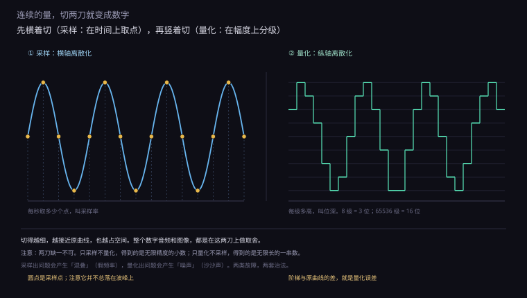
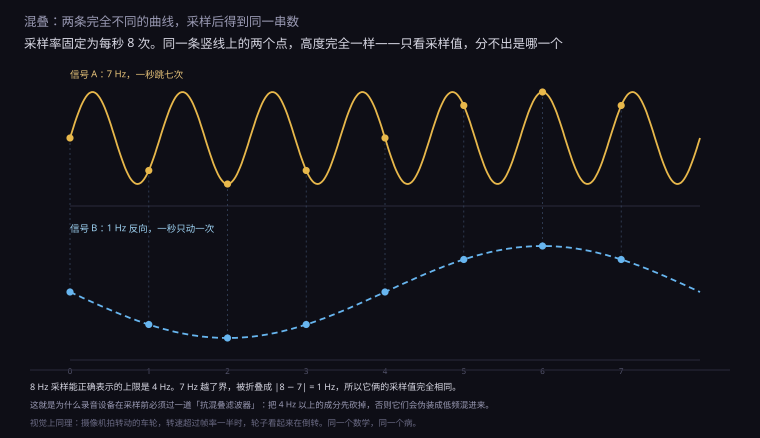
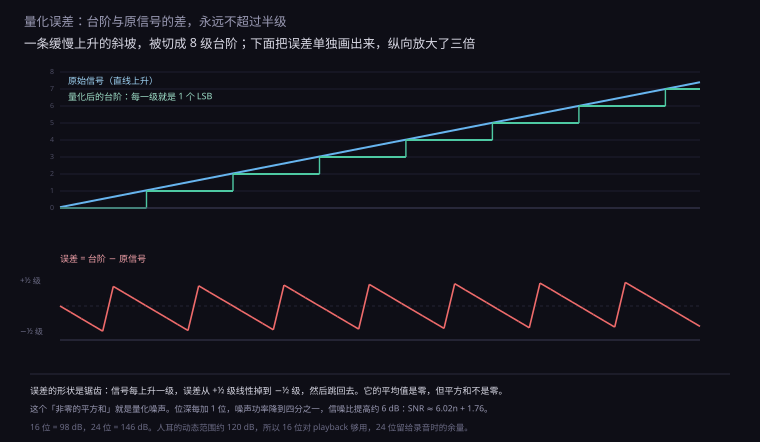
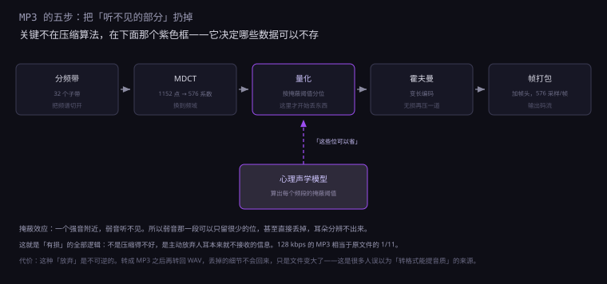
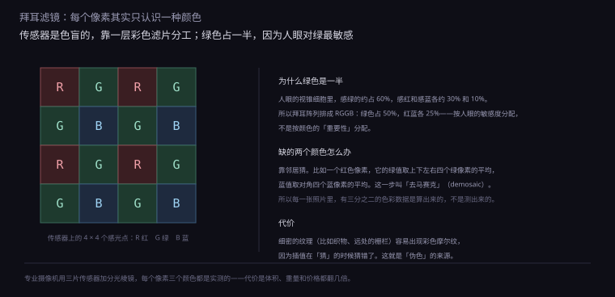
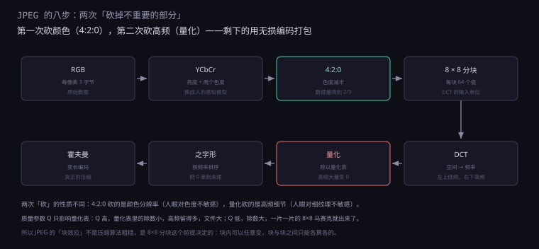

约 1.3 万字 · 6 张图 · 读完你能解释为什么是 44.1 kHz、 为什么 4:2:0 砍掉一半颜色却看不出来、 以及为什么 JPEG 放大后会有一格一格的方块
先看一个最朴素的场景：用麦克风录一句话。
空气压力的变化推动振膜，振膜带动线圈，线圈在磁场里移动产生电压。 这个电压是连续变化的——在任何一个瞬间，它都有一个值， 两个瞬间之间还有无穷多个中间值。
计算机存不下「无穷多个值」。它只能存有限个数字。 所以必须做两件事：在时间上取样，在幅度上分级。

第一刀叫采样（sampling）：每隔固定时间量一次电压，记下来。 每秒量多少次，叫采样率。CD 是 44100 次，电话是 8000 次。
第二刀叫量化（quantization）：把量到的电压值，归到最近的刻度上。 用多少个刻度，叫位深。CD 是 65536 级（16 位），电话是 256 级（8 位）。
两刀切完，一条连续的曲线就变成了一串整数。这串整数就是数字音频的原始形态， 有个专门的名字叫 PCM（脉冲编码调制）。
这里有个容易忽略的点：两刀切的东西不一样。
采样切的是自变量（时间），量化切的是因变量（幅度）。 所以它们的误差性质也完全不同—— 采样出问题是「频率搞错了」，量化出问题是「数值不够准」。 这两类故障在听感上、在修法上，都是两回事。
| 参数 | 切哪根轴 | 变大意味着 | 出问题的表现 |
|---|---|---|---|
| 采样率（Hz） | 时间轴 | 能记录更高的频率 | 混叠：高频伪装成低频 |
| 位深（bit） | 幅度轴 | 能记录更小的差别 | 噪声：沙沙的底噪 |
采样率的选择，历史上还有一条完全不同的路线：电话。
电话只需要传人声，而人声的能量集中在 300 Hz 到 3.4 kHz 之间。 所以电话系统的采样率定在 8 kHz——刚好覆盖 4 kHz 以下的频段。
这个数字决定了整个电话网络的架构：一路通话 64 kbps（8 kHz × 8 位）， 一条 E1 线路 2.048 Mbps 能装 30 路。到今天，VoIP 和手机通话的底层编码 仍然按 8 kHz 采样，只是压缩算法换了好几代。
| 场景 | 采样率 | 最高频率 | 为什么是这个数 |
|---|---|---|---|
| 电话 | 8 kHz | 4 kHz | 人声就到这里 |
| CD | 44.1 kHz | 22.05 kHz | 录像机频响 + 人耳 |
| 影视 | 48 kHz | 24 kHz | 能被 24/25/30 整除 |
| 录音棚 | 96 / 192 kHz | 48 / 96 kHz | 给滤波器和后期留余量 |
注意最后一行：192 kHz 能记录 96 kHz 的声音，而人耳只能听到 20 kHz。 这不是浪费吗？从「听」的角度是浪费，但从「处理」的角度不是—— 高采样率让抗混叠滤波器的过渡带更宽，相位失真更小； 也让变速、变调这类后期处理有更多余量。 它不是为耳朵服务的，是为处理链服务的。
还有一个数字容易被忽略：通道数。单声道是一个通道，立体声是两个。 它不改变「切」的方式，只是把同一件事做几遍——但直接决定了文件大小翻不翻倍。
有了这三个数，一个 PCM 文件的体积可以精确算出来：
体积（字节/秒）= 采样率 × 位深 ÷ 8 × 通道数
CD 音质：44100 × 16 ÷ 8 × 2 = 176400 字节/秒 ≈ 172 KB/s
一分钟：约 10.1 MB
一小时：约 606 MB这个数字很吓人。一张 700 MB 的光盘，按这个算法只能存 69 分钟—— 而实际的 CD 能存 80 分钟，因为它的容量定义（74 分钟）和后来的高密度盘（80 分钟）不一样。 但量级是对的：未经压缩的数字音频，体积大得惊人。
顺着这个思路，可以说清一个老问题：数字为什么比模拟好？
模拟录音把声音存成磁带的磁化强度，或者黑胶的沟槽形状。 这些物理量是连续的，但每一次复制都会叠加噪声—— 转录一次差一点，转录十次就明显了。而且噪声一旦混进去，就再也分不开。
数字录音存的是整数。复制的时候，读出来是 1000，写进去还是 1000—— 只要噪声没大到把 1000 变成 999，复制就是完全无损的。 转录一百次，还是一个字节不差。
模拟复制：信号 + 噪声 → 再复制时噪声也参与放大，越滚越大
数字复制：信号 → 判定为最近的整数 → 只要误差不超过半级，得到的就是原值这就是「数字」最本质的优势：它把「连续误差的累积」变成了「离散符号的判定」。 只要判对了，误差就清零。而判定是可以做到很可靠的——加纠错码、加重传、加校验。
代价是：一旦判错（比如误码），错的是整个符号，而不是「差一点点」。 所以数字系统必须有纠错机制，否则一个比特翻转就能毁掉一段数据。 模拟是「逐渐变差」，数字是「要么完美，要么全错」。
采样率定多少合适？直觉是「越高越好」，但高到多少才够，是有严格答案的。
答案是信号最高频率的两倍。这个结论叫奈奎斯特-香农采样定理， 1928 年奈奎斯特提出，1949 年香农给出严格证明。
人耳能听到的最高频率大约是 20 kHz（年轻人），所以采样率至少要 40 kHz。 CD 取 44.1 kHz，留了一点余量。
为什么是两倍？用一个具体的例子看最清楚。
假设采样率是每秒 8 次。现在有一个每秒振动 7 次的信号（7 Hz）， 和一个每秒振动 1 次但方向相反的信号（−1 Hz）。图 1.1.5-2 是它们的采样结果。

为什么？因为采样只发生在整数时刻。7 Hz 的信号在第 n 个采样点的值是
sin(2π × 7n / 8)，而 −1 Hz 的信号是 sin(2π × (−1)n / 8)。
这两个式子在 n 取整数时完全相等，因为
7n/8 和 −n/8 相差恰好 n 个整周期。
n=0: sin(0) = 0 sin(0) = 0
n=1: sin(7π/4) = −0.707 sin(−π/4) = −0.707
n=2: sin(7π/2) = −1 sin(−π/2) = −1
n=3: sin(21π/4) = −0.707 sin(−3π/4) = −0.707
...
n=7: sin(49π/4) = +0.707 sin(−7π/4) = +0.707一模一样。这就是混叠（aliasing）：一个超出上限的高频， 在采样之后伪装成了一个低频。
折叠的公式很简单：
如果 f > f_s / 2，实际听到的频率 = |f_s − f|
8 Hz 采样，7 Hz 输入 → |8 − 7| = 1 Hz
8 Hz 采样，6 Hz 输入 → |8 − 6| = 2 Hz
8 Hz 采样，5 Hz 输入 → |8 − 5| = 3 Hz注意 5 Hz 折叠成 3 Hz 之后，没有超过 4 Hz 的上限，所以它是「合法的」—— 也就是说，5 Hz 和 3 Hz 在 8 Hz 采样下无法区分。这就是为什么上限必须是采样率的一半： 超过一半的频率，都会折叠到一半以内，和已有的频率撞车。
这个现象在生活里到处都是。摄像机拍转动的车轮，转速超过帧率一半时轮子看起来在倒转； 拍直升机螺旋桨，桨叶看起来静止或者缓慢转动；用手机拍电脑屏幕，屏幕上出现滚动的黑条。 全是同一个数学。
那怎么解决？答案是在采样之前，先把高频砍掉。
这个滤波器叫抗混叠滤波器（anti-aliasing filter）， 必须放在模数转换器之前，也就是必须是模拟电路。 因为一旦采样完成，高频已经折叠进去了，和真实的低频混在一起， 再也分不开。
这个定理为什么成立？严格证明要用傅里叶变换，但有一个直观的说法够用。
采样在频域里的效果，是把原始频谱复制无数份，每隔 f_s 摆一份。 这就像把一张画反复复印，然后按固定间距贴在一条长纸上。
如果原始信号最高只到 f_s/2，这些复制品之间刚好不重叠， 用低通滤波器就能把中间那一份单独切出来，还原原始信号。
但如果原始信号超过了 f_s/2，复制品就会互相压到对方身上。 压上去的部分再也分不开——这就是混叠在频域里的样子。
f_s = 8，信号带宽 0–4 → 复制品排在 0、±8、±16… 互不重叠 ✓
f_s = 8，信号带宽 0–6 → 第 1 份的 4–6 压在第 0 份的 −4–−2 上 ✗所以「两倍」不是一个宽松的经验值，是刚好不重叠的临界点。 低于两倍一定重叠，等于两倍时边界刚好接触（实际工程要留余量）， 高于两倍是浪费。
抗混叠滤波器在工程上有个难处：它必须是「陡」的。
理想的低通滤波器是「通带内全过，阻带内全断」，中间一刀切。 但真实的滤波器做不到——它有一个过渡带，从「全过」到「全断」需要一段频率。
如果过渡带正好压在 20 kHz 附近，那要么把 18 kHz 也削掉（损失高频）， 要么放过 22 kHz（产生混叠）。这是采样率定在 44.1 而不是 40 的原因之一： 多出来的 4.1 kHz 是留给滤波器过渡带的。
理想：0 –20k 全过 | 20k 之后全断
实际：0 –20k 全过 | 20k–22k 逐渐衰减 | 22.05k 之后全断
↑
这一段就是过渡带，靠 44.1 的余量挤出来专业录音设备用更高的采样率（96 kHz、192 kHz），一部分原因就是让过渡带更宽、 滤波器可以做得更平缓（相位失真更小）。但这是「工程上的从容」，不是「能听到更高频率」—— 96 kHz 能记录 48 kHz 的声音，而人耳只能听到 20 kHz，多出来的部分没有任何听觉意义。
顺带说，采样定理还有个反向的用法：只要信号里没有超过一半采样率的成分， 采样就能无损还原原信号。不是「近似还原」，是数学上严格的无损。
这就是数字音频的地基。44.1 kHz 采样的 CD，能完整还原 22.05 kHz 以下的所有频率， 而人耳只能听到 20 kHz——所以在这个范围内，CD 是完全忠实的， 不存在「数字音频丢失了细节」这回事。
44.1 这个数字看起来很怪。为什么不是整数的 44 或 45，也不是更漂亮的 48？
因为它不是从音频需求推出来的，是从录像机推出来的。
1970 年代末，索尼和飞利浦要合作定数字音频标准。当时没有硬盘录音机， 能存大量数据的只有专业录像机（U-matic），它把音频信号当成视频信号记录在磁带上。
PAL 制式的录像机，每帧 625 行，其中可见 245 行，每秒 25 帧（50 场）。 如果每行存 3 个采样：
245 行 × 3 采样 × 50 场 = 36750 采样/秒不够 40 kHz。用 NTSC 制式（60 场）：
245 行 × 3 采样 × 60 场 = 44100 采样/秒正好。所以 44100 这个数字，本质上是「一条 NTSC 视频磁迹能装下的音频采样数」。 它刚好超过 40 kHz 的下限，又刚好能被当时的录像机整除， 于是就这么定下来了。
同一时期，广播和电影行业选了另一个数字：48 kHz。 因为 48 能被 24、25、30 整除，和电影帧率对得上，做音画同步方便。 于是今天有两套标准并存：CD 和消费音频用 44.1，影视和专业设备用 48。 转换的时候要做重采样，这也是一个音质损耗点。
16 位是怎么定的？这个更直接：人耳的动态范围。
人能听到的最弱声音大约是 0 dB SPL（听阈）， 强到 120 dB 就会疼。所以理想的动态范围是 120 dB。
每一位提供大约 6 dB 的动态范围（下一节会推这个数）。16 位是 96 dB， 看起来不够 120。但实际录音时，最弱的声音远高于听阈—— 一个安静的录音室底噪就有 30 dB，所以 96 dB 的动态范围已经覆盖了「实际会遇到的最安静到最响」。
| 位深 | 级数 / 动态范围 | 典型用途 |
|---|---|---|
| 8 位 | 256 级 / 约 50 dB | 电话、玩具 |
| 16 位 | 65536 级 / 约 98 dB | CD、消费音频 |
| 24 位 | 1677 万级 / 约 146 dB | 录音棚 |
| 32 位浮点 | 理论 1500 dB | 混音内部，防削顶 |
24 位不是为了「听起来更好」，是为了留余量。 录音时你不可能精确控制峰值，留 20 dB 的余量，16 位就只剩 76 dB 可用了； 24 位留 20 dB 还有 126 dB，绰绰有余。 录的时候用 24 位，发的时候降到 16 位，这是标准流程。
还有一个 CD 的细节值得说：它不只是存音频，还存了大量的纠错码。
CD 的表面是一圈圈的坑，划一道就能毁掉几千个比特。 如果用裸数据，一张盘只要有一粒灰就报废。所以 CD 用了两层纠错（CIRC）， 加上交叉交织——把连续的数据打散分布到盘的不同位置， 这样一道划痕损坏的是「每个块的几个字节」，而不是「一整个块」。
结果是：CD 的纠错码占了总容量的约 30%。 一张标称 700 MB 的盘，实际能装音频的只有 650 MB 左右。 这也是为什么 CD 能忍受明显的划痕还能放——它在用容量换可靠性。
顺带算一下 CD 的比特率：
44100 × 16 × 2 = 1411200 bit/s = 1411.2 kbps这是 MP3 128 kbps 的十一倍。所以当年把 CD 音频压到 MP3， 是一个「十一倍」的压缩——这个数字决定了 MP3 必须用心理声学模型，不能靠无损压缩。
量化是把连续值归到最近的刻度。归的过程一定有误差，最大不超过半个刻度。 图 1.1.5-3 把这个误差单独画了出来。

误差的形状很规律：信号每上升一级，误差从 +½ 级线性掉到 −½ 级，然后跳回去。 这个波形听起来是什么？是一连串「咔哒」——因为它是周期性的，有明确的音高。
这就是早期 8 位音频难听的原因：量化误差太明显，形成了一种「嗡嗡」的噪声。 而且它和信号相关——信号变化慢的时候误差频率低，变化快的时候频率高， 听起来像失真，不像噪声。
解决办法很反直觉：故意加一点噪声。
在量化之前，往信号里加一个幅度约半个刻度的随机噪声（叫抖动，dither）。 这样量化误差就变成随机的了，不再是规律的「咔哒」，而是均匀的「沙沙」。
人耳对「沙沙」的容忍度远高于「咔哒」。所以加了噪声之后， 客观的信噪比变差了，主观的听感却变好了。
现在推一下那个「每位 6 dB」的公式。量化误差均匀分布在 ±½ LSB 之间，
它的功率是 q²/12（q 是步长）。
满幅正弦信号的功率是 (2ⁿq/2)²/2。两者一比，取对数：
SNR = 10 log₁₀( (2ⁿ q / 2)² / 2 ÷ (q² / 12) )
= 6.02n + 1.76 (dB)
16 位 → 6.02 × 16 + 1.76 = 98.1 dB
24 位 → 6.02 × 24 + 1.76 = 146.2 dB每加一位，噪声功率降到四分之一，信噪比提高 6 dB。这条公式在音频、图像、ADC 里通用， 值得记。
同样的量化误差，在图像上的表现完全不同。音频是一维的（时间）， 图像是二维的，误差会在两个方向上同时出现。
8 位灰度图有 256 级，在平滑渐变（比如天空）上，相邻两级之间的跳变是肉眼可见的， 表现为一圈圈色带（banding）。这和一维音频里的「台阶」是同一个东西， 只是画在二维平面上。
解决办法也一样：抖动。在量化前往图像里加一点噪声， 让色带的边界变成随机分布的噪点，远看就平滑了。 打印机和电子墨水屏都在用这个技巧——它们能表现的色阶很少， 靠抖动能模拟出几十种灰色。
8 位灰度：256 级，平滑渐变上能看到色带
10 位灰度：1024 级，色带基本消失
1 位（纯黑白）：只有两级，必须靠抖动模拟灰阶24 位真正的好处在这里：它允许你把电平录得很低。
假设你录一场安静的对话，峰值只到满幅的 10%（−20 dB）。 16 位下，你实际只用了 16 位里的 13 位，动态范围剩 80 dB； 24 位下，你用了 21 位，还剩 128 dB。后期把电平拉回正常， 前者会把量化噪声一起放大，后者几乎听不出来。
16 位，录到 −20 dB → 有效位深降到约 13 位 → 底噪明显
24 位，录到 −20 dB → 有效位深降到约 21 位 → 底噪仍在听阈以下所以录音师的习惯是「24 位 + 留 12 到 20 dB 余量」， 而不是「16 位 + 尽量顶满」。顶满的风险是削顶—— 一旦超过满幅，波形被切平，那是不可逆的失真，比噪声难听得多。
最后说一个实际问题：为什么有的录音听起来「很脏」？ 多半是录音时电平太低（峰值只到满幅的 20%），后期再拉回来， 等于把量化噪声也放大了十几 dB。正确做法是录的时候尽量接近满幅（但别削顶）， 而不是「留很多余量后期再调」。
CD 音质的 PCM 是 1411 kbps。1990 年代，网络带宽只有几十 kbps， 存储卡只有几十 MB。必须压缩，而且必须是十倍以上的压缩。
无损压缩做不到。音频信号的熵很高，通用的无损压缩（zip 那一类）只能压到 60% 到 70%。 想要十倍，只能丢东西。
MP3 的思路是：丢掉人耳本来就听不见的部分。图 1.1.5-4 是它的五步。

核心概念是掩蔽效应（masking）：一个强音附近，弱音听不见。
这个效应在频域和时域都存在。频域上，一个 1 kHz 的强音会让它附近几百 Hz 范围内的 弱音「消失」；时域上，强音之前 5 到 20 毫秒、之后 50 到 200 毫秒内的弱音也会被掩盖。
MP3 的编码器先算出每个频段的「掩蔽阈值」——低于这条线的成分， 人耳听不见。那些成分可以只分配很少的位，甚至完全丢掉。
剩下的部分按「重要程度」分配位：阈值以上的分得多，刚过线的分得少。 这就是为什么 MP3 是变比特率的——复杂的段落用得多，安静的段落用得少。
| 码率 | 压缩比 | 听感 | 典型场景 |
|---|---|---|---|
| 320 kbps | 4.4 : 1 | 绝大多数人听不出与 CD 的差别 | 音乐收藏 |
| 192 kbps | 7.3 : 1 | 仔细听能听出高频细节缺失 | 较早的在线音乐 |
| 128 kbps | 11 : 1 | 镲片、弦乐有明显「水声」 | 2000 年代的 MP3 下载 |
| 64 kbps | 22 : 1 | 明显发闷，像隔着门听 | 语音播客 |
128 kbps 那个「水声」（watery sound）有专门的名字，叫预回声（pre-echo）。 因为量化误差在时域上会扩散，一个突然的强音（比如鼓点）之前会出现一小段噪声。 MP3 用「短块」模式来缓解，但不能根治。
这里要澄清一个流传很广的误解：把 MP3 转成 WAV，音质不会变好。
转换只是解码，丢掉的信息不会回来。文件从 3 MB 变成 50 MB， 但内容还是那个 128 kbps 的 MP3。这就像把一张压缩过的 JPEG 另存为 BMP， 像素不会变多。
MP3 之后，压缩技术又走了两代。
AAC（1997）是 MP3 的直系后继。它换了更好的滤波器组（MDCT 从 18 个频带扩到 1024 个）， 所以频率分辨率高得多，能在更低的码率下保持同样的听感。 同样 128 kbps，AAC 明显好于 MP3；同样听感，AAC 能省 30% 的码率。 今天苹果音乐、YouTube、B 站用的都是 AAC。
Opus（2012）是更新的一代，专为网络设计。 它的特点是码率可以实时变——网络好的时候用 128 kbps， 网络差的时候瞬间降到 16 kbps，而且切换不爆音。 所以视频会议（WebRTC）、Discord、YouTube 直播都用它。
| 格式 | 出现 | 最低码率 | 延迟 | 用在哪 |
|---|---|---|---|---|
| MP3 | 1993 | 64 kbps | 100+ ms | 老音乐文件 |
| AAC | 1997 | 48 kbps | 50 ms | 流媒体、手机 |
| Opus | 2012 | 6 kbps | 20 ms | 视频会议、直播 |
Opus 能做到 6 kbps，是因为它有两套模式：音乐用 MDCT（和 AAC 类似）， 语音用 LPC（线性预测，和电话编码类似）。编码器根据内容自动切换—— 说话的段落用语音模式，放音乐的段落用音乐模式。 这是第一个「知道自己该用哪种算法」的编码器。
音频是时间的函数，图像是空间的函数。数学上是一回事，工程上差别很大。
摄像头的核心是一块图像传感器，上面排着几百万到几亿个感光单元。 每个单元接收光子，产生电荷，电荷量正比于光强。 读出电荷、转成电压、再转成数字——这就是一个像素。
但这里有个物理限制：硅不区分颜色。 一个感光单元只能测「这里有多亮」，测不出「这里是什么颜色」。
解决办法是在传感器前面贴一层彩色滤光片，每个单元前面只放一种颜色。 最常见的排布叫拜耳阵列（Bayer pattern），1976 年由柯达的 Bryce Bayer 发明。

排布的规律是：每 2×2 一组，两个绿、一个红、一个蓝。 所以绿色占 50%，红蓝各 25%。
为什么绿色是两倍？因为人眼的视锥细胞里，感绿的最多（约 60%）， 感红的约 30%，感蓝的只有 10% 左右。 传感器按人眼的敏感度分配采样密度，是按感知重要性分配资源的典型例子。
代价是：每个像素只测到一种颜色，另外两种要靠邻居猜。 这个「猜」的过程叫去马赛克（demosaic）。
一个红色像素的绿色值 = 上下左右四个绿像素的平均
一个红色像素的蓝色值 = 对角四个蓝像素的平均所以每一张照片里，三分之二的色彩数据是算出来的，不是测出来的。 这句话听起来很吓人，但实际效果很好——因为自然图像在局部是平滑的， 邻居的颜色差不多。
什么时候会出问题？细密的纹理。比如远处的栅栏、织物的经纬、 密集的线条。这时候邻居的颜色差很多，插值就会猜错， 出现伪色（false color）——本来没有颜色的地方出现彩色条纹。
专业摄像机用另一种方案：三片传感器，加一个分光棱镜， 把光分成红绿蓝三路，每路一片传感器。这样每个像素三个颜色都是实测的， 没有插值误差。代价是体积、重量、价格都翻几倍，而且需要更长的镜头后焦。
说到传感器，值得和胶片对比一下，因为两者解决的是同一个问题，方法却完全相反。
胶片是化学的：卤化银晶体受光后发生反应，形成潜影， 显影时被还原成金属银。晶体是随机分布的，所以胶片的「像素」大小不一、位置随机。 这带来一个副作用：胶片的颗粒是随机的，放大看是自然的噪点， 而数字传感器的噪点是规则的网格。
人眼对规则图案特别敏感，对随机图案反而宽容。 所以同样信噪比下，胶片的颗粒看起来比数字噪点「舒服」。 这是很多人说「胶片感」的技术原因之一——不是分辨率更高，是噪声的分布更讨喜。
另一件事是过曝的表现。胶片过曝时，高光部分会平滑地「肩部压缩」， 慢慢过渡到纯白；数字传感器过曝是硬切——超过满阱容量就是 255，一片死白。 所以胶片拍逆光很宽容，数码拍逆光容易「死白一片」。 这不是玄学，是两种介质的响应曲线不同。
传感器还有一个绕不开的敌人：噪声。 光子打到硅上产生的电荷是随机的，即使光强完全不变， 每次读出的电子数也会上下浮动。这个波动叫散粒噪声（shot noise）， 它服从泊松分布，标准差等于电子数的平方根。
一个像素收到 10000 个电子 → 噪声约 100 个 → 信噪比 100:1，约 40 dB
一个像素收到 100 个电子 → 噪声约 10 个 → 信噪比 10:1，约 20 dB这条规律解释了两件事。第一，暗光下噪点一定多—— 因为光子少，散粒噪声的相对比例大。第二，像素越大噪声越小—— 大像素能收集更多光子，分母大了，相对波动就小。
所以手机的高像素和大底是一对矛盾。一亿像素塞进指甲盖大的传感器， 单个像素只有零点几微米，进光量极少。厂商的解法是像素合并： 把相邻 4 个或 9 个像素的电荷加在一起读出，等效成一个大像素。 一亿像素合并后输出 1200 万，单像素等效面积变成 9 倍。
这也解释了 ISO 是什么。ISO 不是「感光度」，传感器对光的敏感度是固定的。 ISO 只是一个放大倍数：把读出的电荷放大后再量化。 放大信号的同时也放大噪声，所以高 ISO 一定伴随噪点。 「提高 ISO 能拍到更暗的场景」是真的，「提高 ISO 画质不变」是假的。
颜色这件事，比大多数人想的复杂。它不是光的物理属性，是人眼的三种视锥细胞 对光谱的三种响应强度。也就是说，颜色是感知，不是物理量。
这个事实带来一个很实用的后果：只要三种原色的比例对，人眼就认为颜色一样， 哪怕实际的光谱完全不同。这就是所有彩色显示技术的基础。
于是有了两套完全不同的混色方式。
加色法（RGB）：用在自发光的东西上——屏幕、LED、投影。 红绿蓝三种光叠加，全加是白色，全不加是黑色。
减色法（CMYK）：用在反射光的东西上——纸张、油墨。 青、品红、黄三种颜料，每种吸收一种原色，反射另外两种。 全加是黑色（理论上），实际印刷要再加一个 K（黑）来省钱和加深。
加色：R + G = 黄 G + B = 青 R + B = 品红 R+G+B = 白
减色：C + M = 蓝 M + Y = 红 C + Y = 绿 C+M+Y = 黑（理论）这两套是互补的：加色里的黄 = 减色里的「不吸蓝」， 所以屏幕上的黄和印刷上的黄，光谱完全不同，但人眼看起来一样。
问题在于，没有一套原色能覆盖人眼能看到的全部颜色。 把所有人眼能分辨的颜色画在一张图上，是一个马蹄形（CIE 1931 色度图）。 任何三种实际的原色，连成的三角形都只是马蹄形的一部分。
这个三角形叫色域（gamut）。不同的标准定义了不同的三角形：
| 标准 | 覆盖范围 | 典型设备 |
|---|---|---|
| sRGB | 约 35% 的可见色 | 绝大多数显示器、网页 |
| DCI-P3 | 比 sRGB 大约 25% | 电影、近年手机屏幕 |
| Adobe RGB | 比 sRGB 大约 35%，青色更宽 | 印刷、摄影后期 |
| Rec.2020 | 约 75% 的可见色 | 4K/8K HDR 电视 |
这就解释了一个日常困惑：为什么照片在电脑上很鲜艳，打出来发灰？
因为打印机的色域比屏幕小。屏幕上能显示的一些鲜艳颜色（尤其是亮绿和亮橙）， 油墨调不出来，只能找「最接近的」，结果就暗了一截。 这个现象叫色域裁切（gamut clipping）。
反过来也有：某些印刷色（比如金属色、荧光色）屏幕显示不出来。 所以专业的印刷流程要做「软打样」——在屏幕上模拟印刷的效果， 提前看到哪些颜色会崩。
颜色是感知这件事，还有一个更有说服力的例子：那条裙子。
2015 年，一张连衣裙的照片在网上吵翻了——有人说蓝黑，有人说白金。 同一张图、同一批像素，不同的人看到的颜色完全不同。
原因是照片曝光过度，颜色落在了一个模糊的区间。人脑在判断颜色时会自动补偿光源： 如果你认为这张照片是在阴影里拍的（偏蓝的光），大脑会减掉蓝色，于是看出白金； 如果你认为是在强光下拍的（偏黄的光），大脑会减掉黄色，于是看出蓝黑。
这个机制叫色彩恒常性（color constancy）。它让我们在日光、白炽灯、 阴天下都能认出「这是红苹果」，但也意味着：你看到的颜色，有一部分是大脑编的。
对做图像的人来说，这件事的意义是：「准确的颜色」和「好看的颜色」不是一回事。 相机厂商的直出色彩都做了「记忆色」优化——把肤色往红里调一点，把天空往蓝里调一点， 因为人记忆中的颜色比实际的颜色更鲜艳。
再往下是色深：每个通道用多少位。8 位是 256 级， 三个通道组合是 256³ = 1677 万色，这就是常说的「1600 万色」。
10 位是 1024 级，组合超过 10 亿色。听起来很多，但人眼在平滑渐变上能看出 8 位的「色带」 （banding）——天空从蓝到白的过渡会出现一条条明显的台阶。 10 位就是为了消除这个。
既然每台设备的色域都不一样，那同一张图在不同设备上显示不同颜色就是必然的。 要让它们尽量一致，靠的是一套叫色彩管理的机制。
核心是一份叫 ICC 配置文件的东西。它相当于设备的「颜色说明书」： 里面记录了这个设备的三原色坐标、白点、伽马曲线。 操作系统读这份文件，就知道「这个屏幕上的 (255,0,0) 实际是什么颜色」。
转换的过程是这样的：图片带着「源色域」的标记（比如 Adobe RGB）， 系统把它转到一个和设备无关的中间空间（通常是 CIE XYZ）， 再转成目标设备的色域。
图片（Adobe RGB）→ CIE XYZ → 屏幕（sRGB）
↓
超出屏幕色域的部分，被裁掉或压缩这个中间步骤很重要，因为它把「两次转换」变成了「一次转换 + 一次转换」， 而不是直接 RGB 到 RGB 的近似。代价是超出目标色域的颜色会被处理掉， 处理方式有四种（叫「渲染意图」）：
| 渲染意图 | 怎么处理超色域 | 用在哪 |
|---|---|---|
| 可感知 | 整体压缩，保持颜色之间的关系 | 照片 |
| 相对比色 | 只改超出的，其余不动 | Logo、图表 |
| 绝对比色 | 不裁切，模拟白点 | 打样 |
| 饱和度 | 优先保饱和，牺牲准确 | 商业图表 |
这件事在日常里的表现是：同一张照片，在手机、笔记本、显示器上颜色不一样。 如果三台设备都做了校准，差异会小到看不出来； 如果都没校准，差异可以大到「这是两张图吧」。
所以专业修图的第一步不是调色，是校准显示器—— 用一台分光光度计贴着屏幕测几十个色块，生成一份专属的 ICC 文件。 没有这一步，你调出来的颜色在别人眼里是另一个样子。
分辨率这个词被用得很乱。它至少有三个不同的意思：
| 说法 | 含义 | 例子 |
|---|---|---|
| 像素尺寸 | 横向多少个、纵向多少个 | 1920 × 1080 |
| 像素密度 | 每英寸多少个像素 | 326 PPI |
| 总像素数 | 相乘的结果 | 207 万像素 |
真正决定「清不清楚」的是第二个：PPI（每英寸像素数）。 因为它和观看距离一起，决定了像素在视网膜上占多大的角度。
人眼的分辨极限大约是1 角分（1/60 度）。 在 25 厘米的距离上，1 角分对应的长度是：
2 × 25cm × tan(0.5′) ≈ 0.073 mm
25.4 mm ÷ 0.073 mm ≈ 348 PPI所以 25 厘米看手机，超过 350 PPI 就看不出像素点了。 这就是「视网膜屏」的物理依据——乔布斯 2010 年发布 iPhone 4 时说 326 PPI， 算法用的是 30 厘米距离，结论一样：超过某个密度，再高也没意义。
距离一变，结论就变。看显示器通常 60 厘米，这个距离下 1 角分对应 0.175 mm， 也就是 145 PPI 就够。
| 设备 | 尺寸 / 分辨率 | PPI | 典型距离 | 够不够 |
|---|---|---|---|---|
| 手机 | 6.1 寸 2532×1170 | 460 | 25 cm | 远超 |
| 笔记本 | 14 寸 2880×1800 | 242 | 40 cm | 够 |
| 27 寸 4K 显示器 | 3840×2160 | 163 | 60 cm | 刚好 |
| 27 寸 1080p | 1920×1080 | 82 | 60 cm | 看得出颗粒 |
| 65 寸 4K 电视 | 3840×2160 | 68 | 2.5 m | 够 |
最后一行值得注意：65 寸 4K 电视只有 68 PPI，比 27 寸 1080p 还低， 但没人抱怨电视看不清——因为观看距离是 2.5 米，不是 60 厘米。 PPI 单独看没有意义，必须和距离一起看。
这解释了两件常被争论的事。
第一，「4K 在手机上没意义」。6 寸屏幕做到 4K，PPI 会超过 700， 是分辨极限的两倍。多出来的像素只会增加功耗，肉眼一点收益都没有。 所以手机厂商早就不拼分辨率了，改拼色准和亮度。
第二，「为什么高分辨率屏幕要开缩放」。 一个 27 寸 4K 显示器，如果按 100% 显示，字会小得看不清——因为系统默认按 96 PPI 设计字号。 所以要开 150% 或 200% 缩放，让「逻辑像素」变大，物理像素还是那么多。 这就是为什么 4K 显示器上截图，得到的图是 3840 宽，但看起来和 1920 的布局一样。
还有一个和 PPI 相关的技巧，值得单独说：子像素渲染。
液晶屏的每个像素是由红绿蓝三个子像素并排组成的。 正常的渲染是三个子像素一起亮，混成一个颜色。 但早期的液晶屏分辨率低（96 PPI），文字边缘会有明显的锯齿。
微软的 ClearType 想了个办法：分别控制三个子像素的亮度， 相当于把水平分辨率提高了三倍。这样文字的边缘可以落在「三分之一像素」的位置上， 看起来锐利得多。
普通渲染：一个像素 = 一个灰阶值（RGB 同时亮）
子像素渲染：一个像素 = 三个独立的亮度值（R、G、B 分别控制）代价是：颜色边缘会出现彩边（fringing）。近距离看白底黑字， 字的左右边缘会有一点红或蓝。大多数人看不出，但对色彩敏感的人会觉得刺眼。
这也是为什么高分屏普及之后，ClearType 反而被关掉了—— 像素密度够高时，子像素带来的收益抵不过彩边的代价。 一个为低分辨率设计的技巧，在高分辨率时代自然退场。
分辨率还有一个绕不开的问题：缩放。
把 1000×1000 的图显示在 500×500 的窗口里，要丢掉一半像素。 最简单的做法是「每隔一个取一个」（最近邻），快，但会有锯齿。 更好的是双线性插值：取周围 4 个像素的加权平均。 再好一点是双三次插值：取周围 16 个像素，用三次函数加权。
| 算法 | 取几个邻居 | 效果 | 速度 |
|---|---|---|---|
| 最近邻 | 1 | 锯齿明显，像素感强 | 最快 |
| 双线性 | 4 | 平滑但会糊 | 快 |
| 双三次 | 16 | 较锐利，轻微振铃 | 中等 |
| Lanczos | 更多 | 最锐利，振铃更明显 | 慢 |
这里有个反直觉的点：缩小图像时，双三次不一定比双线性好。 因为缩小是「多个像素合成一个」，如果只取 16 个邻居，会漏掉远处像素的贡献， 产生摩尔纹。正确做法是先用低通滤波（模糊）再采样—— 这其实就是把「抗混叠滤波器」搬到了图像领域。
放大和缩小是两件事：放大的难点是「猜缺失的细节」（插值）， 缩小的难点是「别让高频混进来」（抗混叠）。很多人把两者混为一谈，结果缩小后的图总是有摩尔纹。
终于到了那个所有人都有直观感受的现象：JPEG 图片放大，边缘会出现一格一格的方块。
原因藏在它的第八步流程里。图 1.1.5-6 是完整路径。

第一步到第三步是换颜色空间。RGB 三个通道里，人眼对亮度最敏感， 对色度不敏感。所以先转成 YCbCr（Y 是亮度，Cb/Cr 是两个色度）， 然后把色度的分辨率砍一半——这就是 4:2:0。
4:2:0 的意思是：每 2×2 个像素共用一组色度值，亮度还是每个像素一个。 所以数据量从 3 份（RGB）降到 1.5 份（Y 全 + Cb/Cr 各四分之一）。 直接省掉一半，而肉眼几乎看不出来。
第四步是切成 8×8 的块。这一步是关键，也是块效应的根源。
为什么要切块？因为 DCT（离散余弦变换）的计算量随尺寸平方增长， 8×8 是「效果够好、算得够快」的折中。1974 年提出时，8×8 的 DCT 刚好能用当时的硬件实时算。
第五步，对每个块做 DCT，把 64 个空间像素值变成 64 个频率系数。 左上角是低频（整块的平均亮度），右下角是高频（块内的细节）。
第六步，量化。这是唯一真正丢信息的一步： 每个系数除以量化表里对应的数，然后取整。
量化表（质量 50 时的标准表，左上到右下）
16 11 10 16 24 40 51 61
12 12 14 19 26 58 60 55
14 13 16 24 40 57 69 56
14 17 22 29 51 87 80 62
18 22 37 56 68 109 103 77
24 35 55 64 81 104 113 92
49 64 78 87 103 121 120 101
72 92 95 98 112 100 103 99注意这个表的形状：左上角是 16、11、10，右下角是 112、100、103。 高频的除数大得多，所以高频系数除完基本都变成 0。
这就是 JPEG 的核心：人眼对「块内的高频细节」不敏感，那就把高频全扔掉。 扔掉之后，一个块里的大部分系数变成 0，再经过之字形排序和霍夫曼编码， 连续的一长串 0 可以压得很短。
代价就是块效应。因为每个块是独立做 DCT 和量化的， 块与块之间没有约束。量化后每块的边界值不再连续， 放大看就是一条条硬边。
质量参数 Q 只做一件事：缩放这张量化表。 Q 高，所有除数变小，高频留得多，块效应轻，文件大； Q 低，除数变大，高频全没了，块效应重，文件小。
JPEG 之后，图像压缩也换了两代，思路和音频很像：换更好的变换 + 更聪明的码率分配。
HEIC（2017，基于 H.265 的帧内编码）比同画质的 JPEG 小一半。 苹果从 iOS 11 起默认用它。但它的专利授权复杂， 很多开源软件不支持，所以在 Windows 和安卓上兼容性很差—— 这就是「iPhone 拍的照片在电脑上打不开」的原因。
AVIF（2019，基于 AV1）是 royalty-free 的，压缩率比 HEIC 还好一点， 而且支持 HDR、透明通道、动画。Chrome、Firefox、Safari 16 之后都支持了。 它大概率会是下一个十年的主流。
| 格式 | 出现 | 相对 JPEG 的体积 | 授权 | 浏览器支持 |
|---|---|---|---|---|
| JPEG | 1992 | 100% | 免费 | 全部 |
| WebP | 2010 | 约 70% | 免费 | 全部 |
| HEIC | 2017 | 约 50% | 收费 | 仅 Safari |
| AVIF | 2019 | 约 45% | 免费 | 主流全部 |
注意 WebP 那一行：它 2010 年就出来了，压缩率也不错，但花了十年才铺开。 原因不是技术，是生态——网站要同时准备 JPEG 和 WebP 两份， 图片处理工具要支持，CDN 要能自动转换。技术赢了，工程输了。
AVIF 吸取了教训，从一开始就有大厂推动（Netflix、谷歌、苹果）， 而且浏览器原生支持。这大概能解释为什么它铺开得比 WebP 快。
JPEG 还有两个变体值得知道。
渐进式 JPEG（progressive）：普通 JPEG 是从上到下一行行解码的， 网速慢的时候你看到的是「上半张图 + 下半片空白」。 渐进式改成分多趟传输：第一趟传低频（整张图的模糊版），第二趟补细节， 第三趟再补。所以它打开时是「先糊后清」，体验好得多。
4:4:4 / 4:2:2：这两个数字是色度采样的比例。 4:2:0 是色度横竖都减半（数据量 1/2），4:2:2 是只横向减半（2/3）， 4:4:4 是不减（全采样）。
4:4:4 每像素都有独立的 Y Cb Cr → 数据量 3 份，画质最好
4:2:2 横向两个像素共用一组色度 → 数据量 2 份
4:2:0 横竖各两个像素共用一组色度 → 数据量 1.5 份，最常见截图、线稿、带文字的海报，应该用 4:4:4——因为文字边缘有大量高频色度信息， 4:2:0 会让彩色文字（尤其是红色小字）糊成一团。 这也是为什么很多设计规范会写「导出 JPG 时把色度采样设为 4:4:4」。
视频就是「很多张图」。一张 1080p 的 24 位图是 6.2 MB， 每秒 30 张就是 186 MB/s。一部两小时的电影要 1.3 TB。
所以视频压缩必须利用一个新维度：时间。 相邻两帧的内容几乎一样，只差一点点位移。
这就是帧间压缩。视频里的帧分三种：
| 类型 | 怎么编 | 大小 | 能不能单独解码 |
|---|---|---|---|
| I 帧（关键帧） | 像一张 JPEG，独立编码 | 最大 | 能 |
| P 帧（前向预测） | 只存「相对前一帧的差异」 | 小 | 不能，要前面的帧 |
| B 帧（双向预测） | 参考前后两帧，取平均或插值 | 最小 | 不能，要前后都解出来 |
一组连续的帧叫一个 GOP（Group of Pictures），结构通常是
I B B P B B P B B P ...。GOP 的长度决定了两个权衡：
GOP 长：压缩率高（I 帧少），但拖动进度条时不好定位—— 你得从上一个 I 帧开始解，可能要解好几秒才能显示画面。
GOP 短：压缩率低，但随机访问快，直播和视频会议都用很短的 GOP。
这也解释了为什么「视频剪辑卡」：剪辑软件要显示第 300 帧， 但第 300 帧是 B 帧，必须先解第 295 帧的 I 帧和中间所有的 P/B 帧。 所以专业剪辑会用「全 I 帧」的中间格式（如 ProRes），代价是文件巨大。
帧间压缩的基本单位是宏块（macroblock）。H.264 用 16×16， H.265 可以小到 8×8 或大到 64×64。编码器为每个宏块找一个「最像它的位置」， 只记录运动矢量（往哪个方向移动了多少）和残差。
这个「找」的过程叫运动估计（motion estimation）， 是视频编码里最耗算力的一步。一个编码器要在参考帧里搜索几百个候选位置， 对每个候选算一次差异——这就是为什么视频编码比解码慢十倍以上。
GOP 的长度直接决定了两个场景的技术选型。
点播（看电影、刷视频）：GOP 可以很长，比如 250 帧（约 8 秒一个 I 帧）。 这样压缩率最高，文件最小。拖动进度条时，播放器会找最近的前一个 I 帧开始解码， 最多等 8 秒的画面——用户感觉不到，因为预加载已经做好了。
直播：GOP 必须很短，通常 1 到 2 秒一个 I 帧。 因为新观众随时可能进来，他需要立刻看到画面，不能等 8 秒。 代价是码率上升——I 帧比 P 帧大好几倍，I 帧多了，总码率就高。
| 场景 | GOP | 延迟 / 码率 |
|---|---|---|
| 点播 1080p | 250 帧 / 8 秒 | 可缓冲 · 4–8 Mbps |
| 直播 1080p | 30–60 帧 | 2–5 秒 · 6–10 Mbps |
| 视频会议 | 全 I 帧 | 200 ms 内 · 1–2 Mbps |
最后一行值得注意：视频会议经常用「全 I 帧」，也就是每一帧都独立编码。 这样压缩率最低（可能只有 20:1），但延迟最小、抗丢包最强—— 丢了一帧就是丢了一帧，不会连带后面几秒全花。 在实时场景里，「能恢复」比「压得小」重要得多。
把前面所有数字串起来，做一次完整的估算。这个练习值得亲手算一遍， 因为它能建立「数字内容的体积感」。
目标是：1080p、30 帧、24 位色、一小时。
单帧像素：1920 × 1080 = 2,073,600
单帧字节：2,073,600 × 3 = 6,220,800 ≈ 6.2 MB
每秒：6.2 MB × 30 = 186 MB
每小时：186 MB × 3600 = 669,600 MB ≈ 654 GB654 GB。一块 1 TB 的硬盘，只够存一个半小时的原始视频。
实际用 H.264 压缩之后呢？1080p30 的常见码率是 8 Mbps：
8 Mbps = 1 MB/s
一小时 = 3600 MB ≈ 3.5 GB从 654 GB 到 3.5 GB，压缩比 187 : 1。 这个数字就是过去二十年视频行业的全部努力。
| 格式 | 分辨率 | 码率 | 一小时体积 |
|---|---|---|---|
| 未压缩 | 1080p30 | 1490 Mbps | 654 GB |
| ProRes 422 | 1080p30 | 147 Mbps | 66 GB |
| H.264 高画质 | 1080p30 | 8 Mbps | 3.5 GB |
| H.264 网页 | 1080p30 | 4 Mbps | 1.8 GB |
| H.265 / HEVC | 4K HDR | 25 Mbps | 11 GB |
第二行值得注意：ProRes 只压了 10 倍，但它是帧内压缩（每帧独立）， 所以剪辑时不用等。这就是「中间格式」的定位——不为省空间，为省时间。
再看音频这一路。CD 音质的 PCM 是 1411 kbps，AAC 256 kbps 是它的 1/5.5。 一小时 CD 音频是 606 MB，AAC 之后是 110 MB。
所以一个「1080p 视频 + 立体声」的在线视频，音轨占的比例很小（8 Mbps 里音频只占 0.2）。 但如果是「4K HDR + 全景声」，音频的码率会上到 1 Mbps，比例就明显了。
码率这件事还有一个维度：它是固定的还是可变的。
CBR（固定码率）：每秒输出的数据量基本不变。 适合直播——网络带宽是固定的，码率必须稳定，否则会卡。 代价是：简单画面（比如静止的风景）浪费了码率，复杂画面（比如爆炸）又不够用。
VBR（可变码率）：按画面复杂度分配。简单的段落给 2 Mbps， 复杂的给 15 Mbps，平均下来 8 Mbps。画质更均匀，文件也更小。 适合点播和本地存储。
CBR：每分钟都是 60 MB，简单画面浪费，复杂画面吃亏
VBR：简单段落 15 MB，复杂段落 110 MB，总量更少但画质更好还有一种 CRF（恒定质量），是 VBR 的变体： 你指定一个「质量等级」（比如 x264 的 CRF 23），编码器自己决定用多少码率。 这是压制视频最常用的模式——不用猜码率，质量稳定。
这一节从头到尾只做了一件事：把连续的量切成离散的数。 切法只有两个动作，但每个动作都有自己的数学。
采样切时间轴，受采样定理约束：采样率必须大于信号最高频率的两倍， 否则高频会折叠成低频（混叠），而且不可逆。
量化切幅度轴，受位数约束：每加一位，信噪比提高 6 dB。 量化误差可以用抖动改善听感，但会牺牲客观指标。
图像是同一套逻辑换了维度：传感器上的感光点是采样，每个点的位数是量化。 拜耳阵列让绿色占一半，是因为人眼对绿最敏感。
压缩则是在这两刀之上再砍三轮：空间上砍高频（JPEG）、 时间上砍重复（帧间预测）、感知上砍不敏感的部分（心理模型）。 三层砍完，体积能降两个数量级。
把整条链上的数字汇总成一张表，方便对照：
| 媒介 | 采样：测多少个点 | 量化：每点多少级 | 典型配置 |
|---|---|---|---|
| 音频 | 每秒测电压 | 幅度分级 | 44.1 kHz / 16 位 |
| 灰度图 | 横纵像素数 | 亮度分级 | 1920×1080 / 8 位 |
| 彩色图 | 同上 | 每通道分级 | 同上 / 8 位 × 3 |
| 视频 | 每秒帧数 | 同单帧 | 30 fps / 8 位 |
四行的结构完全一样，只是「轴」换成了时间或空间。 理解了一行，其余三行都是平移。
最后回到一个更大的问题：为什么这一章叫「信息的单位」？ 因为从比特到字节，从数字到文字，从声音到图像， 每一层都在做同一件事——用有限的符号，逼近无限的世界。 逼近的方式决定了代价，代价决定了工程上的所有取舍。
下一章换一个层级：从「信息怎么表示」跳到「机器怎么运算」。 有了比特、字节和这些表示法，接下来该让它们动起来了。
1. 采样切时间轴（或空间轴），量化切幅度轴。采样出问题是混叠（假频率），量化出问题是噪声（沙沙声）。
2. 采样率必须大于信号最高频率的两倍。因为超过一半采样率的频率会折叠到一半以内，和已有频率撞车，无法区分。
3. |8 − 6| = 2 kHz。6 kHz 折叠成了 2 kHz，和真实的 2 kHz 无法区分。
4. 因为混叠发生在采样的那一刻。采样完成后高频已经和低频混在一起，数学上再也分不开，只能靠采样前的模拟滤波器提前砍掉。
5. 44100 = 245 行 × 3 采样 × 60 场，来自 NTSC 录像机的磁迹容量；48 kHz 因为能被 24/25/30 整除，方便和电影帧率对齐。
6. 约 98 dB，公式是 6.02n + 1.76（n 是位数）。每加一位，量化噪声功率降到四分之一，信噪比提高 6 dB。
7. 因为抖动把「有规律的失真」（听起来像咔哒声、有音高）换成了「无规律的噪声」（沙沙声）。人耳对后者的容忍度高得多。
8. 因为人眼感绿的视锥细胞最多（约 60%），按感知重要性分配采样密度。代价是每个像素只测一种颜色，另外两种要靠邻居插值，细密纹理处会出现伪色。
9. 因为图像被切成 8×8 的块独立做 DCT 和量化，块与块之间没有连续性约束。质量参数只缩放量化表：Q 高除数小、高频留得多，Q 低除数大、高频全丢。
10. 1920×1080×3×30×3600 ≈ 654 GB；H.264 8 Mbps 压到约 3.5 GB，压缩比接近 190 : 1。